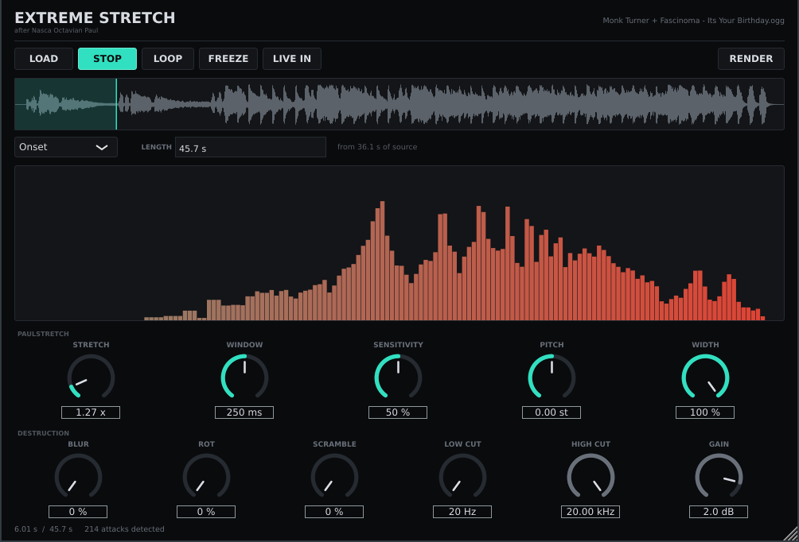
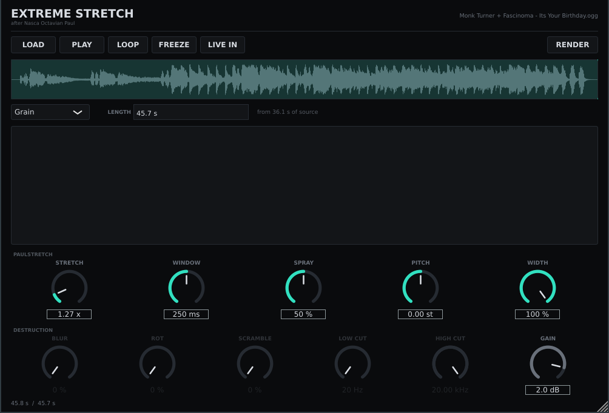

after Nasca Octavian Paul
Paul's Extreme Sound Stretch, rebuilt as a JUCE 8 plugin, standalone app and command-line renderer — with five algorithms, ratios up to 1015×, and a destructive half the original never had.
Every clip below is the same six seconds of source, so the only thing that differs is what the engine did to it. Start here:
Smooth algorithm throughout. Listen to it stop being a stretch and become a place.
All at 20×, same window. Only the resynthesis differs.
This is the part that isn't paulstretch.
Source: “It’s Your Birthday!” by Monk Turner + Fascinoma, CC BY 3.0, time-stretched. One global trim was applied across all clips so nothing clips — the level differences you hear between them are real.


Ships as VST3, a standalone app, and
extremestretch-render, a headless CLI — every clip on this
page was made with the CLI. There is also a self-test binary that asserts 97
things about the DSP and has to print ALL PASS.
Take a long window of input, window it, FFT, throw the phases away
and replace them with noise, IFFT, window again, overlap-add at 50%. The output
hop is windowSize/2; the input hop is
(windowSize/2) / stretch, and that is the only place the stretch
ratio appears anywhere in the code. Nothing is interpolated and nothing is
time-warped — the frames simply overlap more.
This is the detail that catches people. Because the phases are random,
overlapping frames add incoherently — in power, not in amplitude. So
the condition the window must satisfy is sum(w²) ≈ constant,
not the usual COLA condition.
A Hann window applied twice at 50% overlap swings 6 dB and tremolos audibly.
Paul's window, sqrt(1 − |x|^2.5), ripples 2.16 dB in power.
Its mean(w²) of 0.714 times the mean overlap sum of 1.429 comes to
1.02 — which is why paulstretch is unity-gain with no normalisation anywhere in
the signal path. The self-test asserts all three numbers, and a real render
measures +0.05 dB against its input.
There are actually three windows, because the algorithms add differently:
Paul's for random phase, sqrt(Hann) for the coherent vocoder
(which is a perfect reconstructor at ratio 1), and plain Hann for
grains, which are windowed only once.
A window can be 262144 points, so one FFT is tens of milliseconds — far too
slow for an audio callback. A render thread keeps a FIFO topped up and
processBlock only ever memcpys out of it. Playback therefore
starts instantly and stays memory-bounded no matter how absurd the ratio: a
60-second file at 1015× is 1.9 billion years of audio that is never
materialised anywhere.
| Paulstretch | |
|---|---|
| STRETCH | 1× – 1015×, on a biased-log knob so the musical range keeps most of the travel. Or type a target length — “2h”, “1000 years”, “9.5 billion years” — and the ratio follows. |
| WINDOW | 5 ms – 5 s, snapped to a power of two. Short is grainy, long is glassy. |
| SHAPE | One knob wearing five hats; it renames itself per algorithm — SENSITIVITY, COHERENCE, SPRAY, HOLD. |
| FREEZE | Pins the read head. The drone hangs on one moment forever. |
| WIDTH | 0 = channels share a phase per bin, 1 = fully decorrelated. This is where the huge paulstretch stereo comes from. |
| Destruction | |
|---|---|
| PITCH | ±24 semitones by resampling the magnitude spectrum. Artefact-free, because there are no phases left to smear. |
| BLUR | Smears magnitudes across neighbouring bins. The radius grows with frequency, so the smear is constant in octaves rather than in hertz, and the energy is put back afterwards. |
| ROT | Kills bins, and the damage persists between frames. At 1.0 nothing heals and the drone collapses to whatever survives; below that, damage and healing find an equilibrium. Back it off and it grows back. |
| SCRAMBLE | Displaces bins locally, with the same swap map on every channel so the stereo image survives. |
| LOW / HIGH CUT | 24 dB/oct gating done in the magnitude domain. |
Needs JUCE 8 and CMake. No other dependencies.
git clone https://github.com/willbearfruits/extremestretch
cd extremestretch
cmake -B build -DCMAKE_BUILD_TYPE=Release
cmake --build build -j$(nproc)
# must print ALL PASS
./build/ExtremeStretchSelfTest_artefacts/Release/extremestretch-selftest
The VST3 is copied into ~/.vst3/ after a successful build; pass
-DES_COPY_PLUGIN=OFF to keep everything inside build/.
extremestretch-render in.wav out.wav --stretch 50 --window 0.5
extremestretch-render in.wav out.wav --length "2h" # ratio worked out for you
extremestretch-render in.wav out.wav --algorithm vocoder --shape 0.7
extremestretch-render in.wav out.wav --stretch 1e14 --max-seconds 60It prints the full output length before writing anything, so you can see what you are asking for. It will happily tell you the answer is 9.5 billion years.
The algorithm is Nasca Octavian Paul's. He wrote Paul's Extreme Sound Stretch (and ZynAddSubFX), and the idea at the heart of this — throw the phases away, replace them with noise, overlap enormous windows — is entirely his. It is one of those rare techniques that is trivial to state and sounds like nothing else.
This is an independent reimplementation written from the algorithm, not a port or a translation of his code. Credit for the invention is his; any bugs in this version are ours.